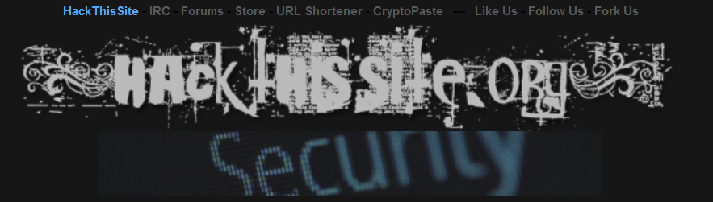
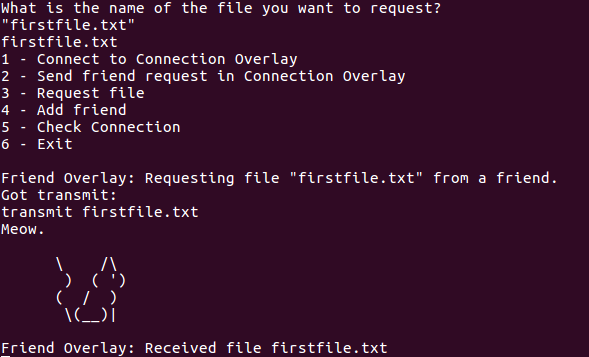

Writing secure and clean code is hard, and static analysis tools with predefined rules don't catch all errors. On github, there is a vast number of vulnerable code samples, many of them fixed in commits. In my master's thesis, I scraped fixes for vulnerabilities in python source code from github, encoded the dataset in vector format with the help of Word2Vec and trained a Long Short Term Memory Network to find typical flawed code patterns for common vulnerabilities such as SQL injections, cross-site scripting or path disclosure. The resulting model was able to find those patterns with high precision (average 91%) and recall (average 83%) while highlighting specific code tokens that are possibly part of the vulnerability.
The github repository contains examples and further explanations as well as the master thesis itself.
Detecting Vulnerabilities in Python Source Code with Deep Learning

Hackthissite
My writeups / solutions for the challenges on the hacking platform hackthissite.org can be found here (work in progress).
IP over DNS

Firewalls for public wifi such as universities, airports, train stations, coffee shops or hotels often have restricting rules that prevent IP traffic before the user has logged in to the network, requiring a password, some payment or both before allowing access to the internet. But in many cases, DNS traffic to the local nameserver is not blocked. By setting up an authoritative nameserver for one's own subdomain, one can send DNS queries that will be transmitted to this outside DNS server, and therefore transmit data. It is possible to tunnel IP traffic encoded in DNS messages and therefore circumvent the restrictions of the network.
This writeup demonstrates how to use iodine to tunnel IP over DNS, how restricted hotspots can be used without credentials to browse the web, and shows some statistics that compare regular traffic with tunneled traffic. There is also a very simple script that acts as a basic detection tool for unusual DNS traffic. (Github page)
Private Friend2Friend network

A very simple prototype for a privacy-focused peer-to-peer filesharing network that provides deniability and allows for filesharing with unknown peers while at the same time only communicating with friends.
PFTF is a peer to peer network with two layers/overlays. I the first overlay, the connection overlay, every peer is connected with many other peers, just as one would usually expect. It is used for providing basic connectivity in order to discover your friends on the network, which whom the friend overlay is created. Only friends tell each other what files they have, and only friends share files directly. But friends forward file announcements to other friends, and do the same with file requests and answers to those requests. Therefore, it is never clear whether a single user provided a file himself or just informed other people that their friend provided it, and in the same way, a request could always come from the participant who asked or from somebody else, being merely forwarded. Therefore, the system provides strong deniability, while not being very efficient.
(Github page)